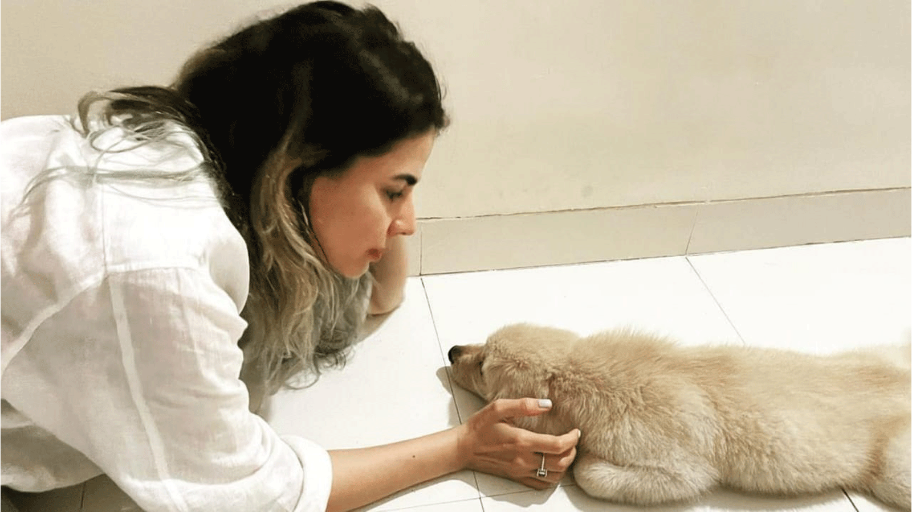

The Life-Changing Magic of Pet Parenting by Kirti Kulhari
Image Credits https://m.timesofindia.com/videos/entertainment/hindi/kirti-kulhari-on-pet-parenting-says-it-made-a-big-difference-in-her-life/videoshow/100996547.cms
Have you ever thought about adopting a pet? If not, you might be missing out on a life-changing experience that can bring joy, love, and purpose into your life. This is what Kirti Kulhari discovered when she became a pet parent to her beloved dog, Luna.

"I never thought of myself as a dog person, but when I met Luna, I knew she was meant to be mine. Adopting her was one of the best decisions of my life. She has taught me so much about love, loyalty, and the importance of being present in the moment. She has also saved me from loneliness, anxiety, and depression by being my constant companion and source of comfort. I can't imagine my life without her."
The Benefits of Pet Parenting
If you're still not convinced that pet parenting is worth it, consider some of these benefits:
- Mental Health: Studies have shown that pet owners experience lower levels of stress, anxiety, and depression than non-pet owners. Having a pet can provide a sense of purpose, companionship, and unconditional love that can improve your mood and overall well-being.
- Physical Health: Dogs, in particular, require daily exercise, which can motivate their owners to be more active. Walking, running, and playing with your dog can help you stay fit, reduce your risk of chronic diseases, and improve your cardiovascular health.
- Responsibility: Caring for a pet can teach you important life skills such as time management, budgeting, and decision-making. The routine of feeding, grooming, and training your pet can also provide a sense of structure and purpose in your life.
- Animal Welfare: By adopting a pet, you're not only improving your own life but also saving the life of an animal in need. Many animals in shelters are euthanized each year due to overcrowding, so by choosing to adopt, you're helping to reduce this unnecessary loss of life.
These are just a few of the many benefits that pet parenting can offer. Of course, adopting a pet is a big responsibility and requires careful consideration and preparation. Here are some tips to help you become a successful pet parent:
Practical Tips for Pet Parenting
- Adopt, don't shop: Adopting a pet from a shelter or rescue organization is not only more affordable than buying one from a breeder or pet store, but it also helps to reduce the demand for puppy mills and other unethical breeding practices.
- Do your research: Before adopting a pet, make sure you're prepared for the responsibilities that come with it. Research the breed, age, and temperament of the animal to ensure that it's a good fit for your lifestyle and living situation.
- Provide basic needs: Make sure your pet has access to food, water, shelter, and medical care. Keep your pet's living area clean and comfortable, and provide toys and other enrichment activities to keep them mentally stimulated.
- Train your pet: Basic obedience training can help your pet become well-behaved and socialized. It can also reduce the risk of behavior problems that can lead to surrender or euthanasia.
- Bond with your pet: Spend quality time with your pet by playing, cuddling, and bonding. This can strengthen the bond between you and your pet and improve their overall well-being.
- Be responsible: Make sure your pet is up to date on vaccinations, licensed, and microchipped. Keep your pet on a leash or in a secure area when outside, and clean up after them.
By following these tips, you can provide a happy and healthy home for your pet while also reaping the benefits of pet parenting.
Conclusion
According to Kirti Kulhari, pet parenting can be a life-changing experience that brings joy, love, and purpose into your life. By adopting a pet, you can improve your mental and physical health, learn important life skills, and contribute to animal welfare. However, pet parenting is also a big responsibility that requires careful consideration, research, and preparation. By providing your pet with basic needs, training, and bonding, you can create a happy and healthy home that benefits both you and your furry friend.
Curated by Team Akash.Mittal.Blog
Share on Twitter Share on LinkedIn